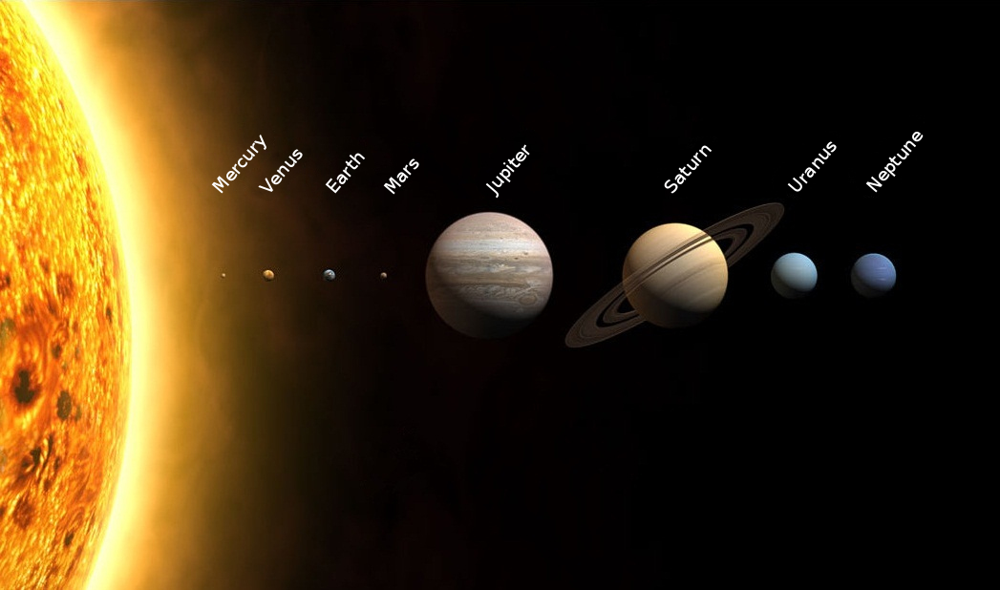

Byter bild med hjälp av jQuery attr() om man hoovrar över den.
Dynamisk grafik med HTML5-elementet canvas:Rita raka linjer och kurvlinjer, Rita bézier-kurvor och former ifyllda med både färg, mönster och gradienter, Rita text (exempelvis dagens datum/tid), Använda transparens och skuggor, Lägga till en eller flera bitmappad bilder, Använda en teknik för att spara bilden